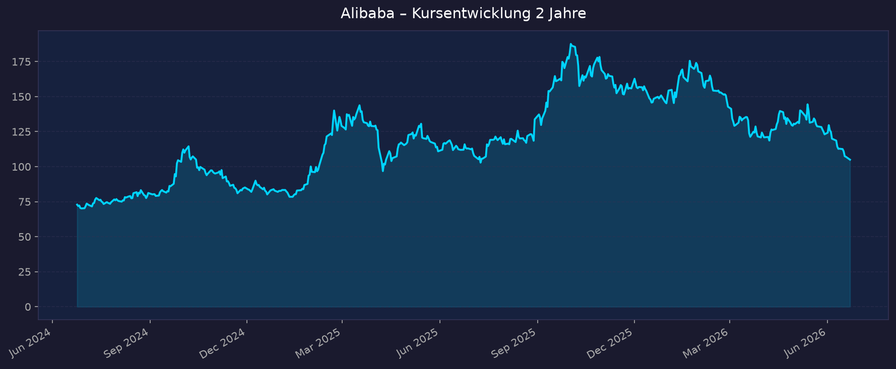
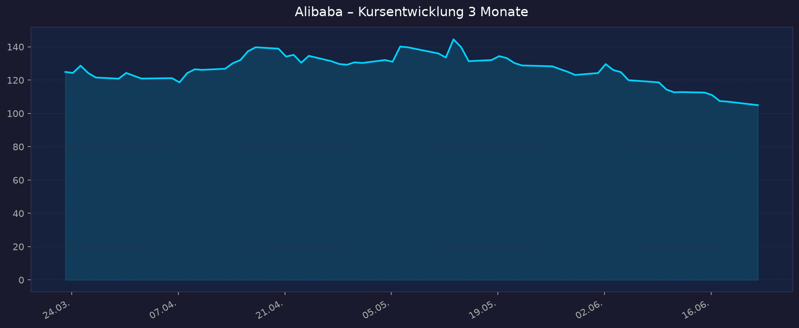

These: Antizyklischer China-KI-Wert. −28 % YTD nahe Jahrestief, Cloud Intelligence +38 % YoY, Qwen-KI mit >300 Mio. MAU. Hauptrisiken: Regulierung, Geopolitik (Pentagon 1260H), ADR-Delisting (HK-Linie 9988.HK als Alternative). Alle Kurse in USD (NYSE-ADR). HK-Linie: 9988.HK.
📈 1. Kursentwicklung
Aktueller Kurs: 104,97 USD | Veränderung heute: ca. −2,0 % (Vortagesschluss 107,10 USD)
Chart – 2 Jahre

Chart – 3 Monate

| Zeitraum | Kurs Start | Kurs Ende | Veränderung |
|---|---|---|---|
| 2 Jahre | 72,88 USD | 104,97 USD | +44,0 % |
| 3 Monate | 124,91 USD | 104,97 USD | −16,0 % |
| YTD 2026 | — | 104,97 USD | −28,4 % |
| 52-Wochen-Hoch | — | 192,67 USD | −45,5 % vom Hoch |
| 52-Wochen-Tief | — | 103,71 USD | +1,2 % über Tief |
Einordnung: Aktie notiert praktisch am 52-Wochen-Tief. Nach starker KI-Rallye (Hoch 192,67) folgte eine scharfe Korrektur von −45 % – getrieben von CapEx-/Margensorgen und geopolitischem Druck (Pentagon-Blacklist). Über 2 Jahre dennoch +44 %. Interaktiver Chart: https://www.tradingview.com/symbols/NYSE-BABA/
💹 2. KGV-Entwicklung (Kurs-Gewinn-Verhältnis)
Aktuelles KGV (trailing): ~16,2 | Forward-KGV: ~11,4–15,9
| Zeitraum | KGV | Einordnung |
|---|---|---|
| Aktuell (Jun 2026) | ~16,2 | Deutlich unter 10-Jahres-Schnitt |
| 12-Monats-Schnitt | ~19,6 | −14,7 % ggü. Schnitt |
| 10-Jahres-Mittel | ~32,2 | Aktuell ~50 % darunter |
| Tief (Dez 2024) | 12,05 | 10-Jahres-Bottom |
| Hoch (Sep 2022) | 112,49 | 10-Jahres-Peak |
Bewertung: Historisch günstig. Mit ~16,2 liegt das KGV rund 50 % unter dem 10-Jahres-Mittel (~32). Forward-KGV von ~11–16 signalisiert erwartetes Gewinnwachstum. Günstige Bewertung ist jedoch China-Risiko-bedingt (Regulierung, Geopolitik).
💰 3. Sales Multiple (Kurs-Umsatz-Verhältnis / P/S)
Aktuelles P/S-Verhältnis: ~1,7–2,1 (je nach Quelle)
| Zeitraum | P/S Ratio | Einordnung |
|---|---|---|
| Aktuell (Jun 2026) | ~1,70 (Yahoo) bis 2,07 (GuruFocus, Mai) | Niedrig |
| 12-Monats-Schnitt | ~2,27 | −8,7 % darunter |
| 10-Jahres-Median | ~5,47 | Aktuell ~62 % darunter |
Trend: Fallend / niedrig. P/S liegt rund 62 % unter dem 10-Jahres-Median – Ausdruck der drastischen De-Rating-Bewegung chinesischer Tech-ADRs seit 2021. Hinweis: yfinance-Rohwert (0,25) ist ein CNY/USD-Artefakt und nicht belastbar; maßgeblich sind die Macrotrends/GuruFocus-Werte.
📊 4. Handelsvolumen (Trading Volume)
| Zeitraum | Ø Tagesvolumen | Auffälligkeiten |
|---|---|---|
| 3-Monats-Durchschnitt | ~11,1 Mio. Aktien | Relative Volume 1,13 (leicht erhöht) |
| 10-Tage-Schnitt | ~12,2 Mio. Aktien | Über 3M-Schnitt |
| Short Ratio | 3,49 Tage | — |
Volumentrend: Leicht erhöht. Das gestiegene 10-Tage-Volumen deutet auf erhöhte Aufmerksamkeit rund um Pentagon-Blacklist und Jahrestief-Niveau hin.
🏦 5. Insider Trades (letzte 2 Jahre)
| Datum | Name | Funktion | Kauf/Verkauf | Anzahl | Wert |
|---|---|---|---|---|---|
| 25.03.2026 | Executives | Management | Verkauf | nicht verfügbar | Detail nicht verfügbar |
Insider Transactions (Finviz): −3,72 % (negativer Trend) | Insider-Ownership: 0,10 % 3-/24-Monats-Überblick: Netto-Verkäufe auf Managementebene; keine signifikanten Insider-Käufe dokumentiert. Detaillierte SEC-Form-4-Einzeltransaktionen für ADR-Emittenten nur eingeschränkt verfügbar.
Quelle: Finviz / SEC. Hinweis: Als ausländischer Privatemittent (FPI) hat Alibaba reduzierte Insider-Meldepflichten – Daten sind weniger granular als bei US-Inlandsfirmen.
🩳 6. Short-Positionen
Aktuelle Short Quote: 1,62 % des Streubesitzes (Float) | Short Interest: 38,87 Mio. Aktien | Short Ratio: 3,49 Tage
| Zeitraum | Short Interest | Veränderung |
|---|---|---|
| Aktuell | 1,62 % | — |
| Verlauf 3/6/12 Monate | nicht verfügbar | — |
Einschätzung: Niedrig. Eine Short-Quote von 1,62 % ist gering und liegt unter typischen Werten für vergleichbare Tech-Werte – kein erhöhtes Short-Squeeze-Potenzial, aber auch kein massiver Bären-Druck über Leerverkäufe.
🗞️ 7. Aktuelle Nachrichten
| Datum | Quelle | Nachricht | Relevanz |
|---|---|---|---|
| 22.06.2026 | Reuters/CNBC | China setzt 10 US-Rüstungs-/Seltene-Erden-Firmen auf Exportkontrollliste (Gegenschlag zu Pentagon-Liste) | Hoch |
| 17.06.2026 | TechTimes | Alibaba stellt KI-Robotik-Suite vor, während Pentagon-Designation droht | Mittel |
| 16.06.2026 | SCMP | Launch Qwen-RobotSuite: 3 Embodied-AI-Modelle (Manipulation, Navigation, World-Prediction) | Mittel |
| 07.06.2026 | Yahoo/SimplyWallSt | Pentagon designiert Alibaba als "Chinese Military Company" (§1260H) – Aktie −5,1 %; DoD-Vertragsverbot ab 30.06.2026 | Hoch |
| Mai 2026 | StockTitan/IndexBox | Q4 FY2026: Cloud +38 %, KI-Umsatz 11. Quartal in Folge dreistellig; Gewinn durch CapEx belastet | Hoch |
| Mai 2026 | Alibaba/ciw.news | KI-Modellservices-ARR-Ziel: 30 Mrd. RMB (~4,3 Mrd. USD) bis Jahresende; Qwen-App >300 Mio. MAU | Hoch |
| Feb 2025 | CNBC | HFCAA-Delisting-Durchsetzung unter "America First Investment Policy" reaktiviert | Hoch |
| lfd. | MarketBeat/TipRanks | Analysten-Konsens "Strong Buy", Ø-Kursziel ~188–191 USD (+79 % Potenzial) | Mittel |
Sentiment: Gemischt bis vorsichtig negativ kurzfristig (Geopolitik, CapEx-Sorgen), aber strukturell positiv bei Analysten (KI/Cloud-Story, "Strong Buy"). Die §1260H-Designation ist keine Sanktion und schränkt den Wertpapierhandel nicht ein – betrifft v. a. US-Regierungsbeschaffung.
📋 8. Letzte 3 Quartalsberichte
Q4 FY2026 (Quartal bis 31.03.2026)
| Kennzahl | Ist | Erwartung | Abweichung |
|---|---|---|---|
| Umsatz (Revenue) | 35,3 Mrd. USD (+3 %, +11 % bereinigt) | nicht verfügbar | — |
| EPS verwässert je ADS (GAAP) | 1,50 USD (vs. 0,52 VJ) | — | stark gestiegen |
| Cloud Intelligence Umsatz | 6,0 Mrd. USD, +38 % YoY | — | — |
| Cloud bereinigtes EBITA | 550 Mio. USD, +57 % | — | — |
| Bereinigtes EPS je ADS | 0,01 USD (−95 %) | — | CapEx-Belastung |
Guidance: KI-Modellservices-ARR auf 30 Mrd. RMB bis Jahresende; weiterhin hoher KI-/Cloud-CapEx (FY2026 ~126 Mrd. RMB). Kursreaktion: Aktie zunächst gestiegen (KI/Cloud-Momentum), trotz Gewinnrückgang.
Q3 FY2026 (Quartal bis 31.12.2025)
| Kennzahl | Ist | Erwartung | Abweichung |
|---|---|---|---|
| Umsatz (Revenue) | 289,73 Mrd. RMB (+3,4 %) | knapp verfehlt | leicht unter Erwartung |
| GAAP-Nettogewinn | −66 % YoY | — | deutlicher Rückgang |
| Cloud Intelligence Umsatz | 43,28 Mrd. RMB (6,19 Mrd. USD), +36 % YoY | — | beschleunigt |
Guidance: Fortgesetzte Cloud-/KI-Beschleunigung; E-Commerce-Marge unter Investitionsdruck. Kursreaktion: Verhalten negativ (Umsatz-Miss, Gewinneinbruch).
Q2 FY2026 (Quartal bis 30.09.2025)
| Kennzahl | Ist | Erwartung | Abweichung |
|---|---|---|---|
| Umsatz (Revenue) | 247,8 Mrd. RMB (+4,8 %) | nicht verfügbar | — |
| EPS | 9,05 RMB (vs. 18,71 RMB VJ) | — | rückläufig |
| Nettomarge | nicht verfügbar | — | — |
Guidance: Investitionen in KI-Infrastruktur und neue Konsuminitiativen belasten kurzfristig die Profitabilität. Kursreaktion: nicht eindeutig dokumentiert.
Quellen: StockTitan (SEC 6-K), IndexBox, MLQ, MarketChameleon. Free-Cashflow FY2026 negativ wegen CapEx-Welle.
🌍 9. Marktkontext & Wettbewerb
(via market-research Skill)
Markt / Branche: China E-Commerce (~1,68 Bio. USD GMV 2026) + China Cloud/KI (Public Cloud ~115 Mrd. USD 2026, +28 % YoY; Cloud-Computing-Gesamtmarkt ~61 Mrd. USD 2026, CAGR ~23 %).
| Wettbewerber | Stärke ggü. Alibaba | Schwäche ggü. Alibaba |
|---|---|---|
| Tencent (Hunyuan) | WeChat-Ökosystem, Gaming-Cashflow für KI | Cloud nur ~10 % (vs. ~33 %); kein großer Marktplatz |
| PDD / Pinduoduo | Größter GMV (~780 Mrd. USD), Temu-Expansion, hohe Marge | Schwach im Premium-B2C; kaum Cloud/KI |
| JD.com | Eigene Logistik, Elektronik-Stärke | GMV ~547 Mrd.; kapitalintensiv, dünnere Marge |
| Amazon AWS | Globaler Cloud-Marktführer | In Festland-China praktisch nicht adressierbar |
| Baidu (Ernie) | Reifes KI-Modell, kostengünstig | Kleinerer Cloud-Anteil; kein E-Commerce |
| Huawei Cloud | #2 China-Cloud (~18 %), eigene Ascend-Chips, staatsnah | Hinter Alibaba; US-Sanktionen begrenzen Expansion |
Branchentrends: (1) KI/LLM-Boom – Qwen >300 Mio. MAU, KI-Cloud 11 Quartale in Folge dreistellig; brutaler Preiskampf (chinesische Modelle 15–30× günstiger). (2) Cloud-Beschleunigung – Alibaba Cloud externe Umsätze +40 % im März-Quartal. (3) Konsumschwäche/Deflation – GDP-Ziel 2026 auf 4,5–5 % gesenkt, sinkende Stimulus-Intensität.
Marktposition: Cloud: klarer Marktführer China (~33 % IaaS, vor Huawei ~18 % und Tencent ~10 %), größter Cloud-Anbieter Asien-Pazifik. E-Commerce: Tmall führend im Marken-/Premium-B2C, aber beim Gesamt-GMV von PDD überholt – vom Quasi-Monopol zum führenden Spieler im fragmentierten Drei-/Vierkampf (PDD, JD, Douyin).
Risiken aus dem Marktumfeld: ADR-Delisting (HFCAA, Risiko erhöht – Mitigation: Dual-Primary-Listing 9988.HK); China-Regulierung (Plattform/Antimonopol, VIE-Struktur); Geopolitik (Pentagon §1260H, KI-Chip-Exportkontrollen); Wettbewerbsdruck (PDD/Douyin, KI-Preiskrieg); Konsumschwäche/Deflation; negativer Free Cashflow durch KI-CapEx.
Quellen: ciw.news, Omdia, Mordor Intelligence, BXTData, Bloomberg, CNBC, StockTitan, Alibaba Group IR.
📝 Gesamteinschätzung
Stärken:
- Klarer Marktführer China-Cloud (~33 %) mit beschleunigendem KI-Wachstum (Cloud +38 %, KI 11 Quartale dreistellig)
- Qwen-Ökosystem (>300 Mio. MAU, RobotSuite) als China-KI-Champion
- Historisch günstige Bewertung (KGV ~16 vs. 10J-Schnitt 32; P/S 62 % unter Median)
- Analysten-Konsens "Strong Buy", Ø-Kursziel ~188–191 USD (+79 %)
- Solide Bilanz; Dual-Listing 9988.HK als Delisting-Hedge
Risiken:
- Geopolitik: Pentagon §1260H-Designation, US-China-Eskalation, KI-Chip-Exportkontrollen
- ADR-Delisting-Risiko (HFCAA) trotz Mitigation
- CapEx-Welle (~126 Mrd. RMB) drückt FY2026-Free-Cashflow ins Negative; bereinigtes EPS −95 % im Q4
- E-Commerce-Kern verliert Marktanteile an PDD/Douyin bei Konsumschwäche/Deflation
- VIE-Struktur und China-Regulierungs-Tail-Risk
Fazit: Alibaba ist ein strukturell zweigeteilter Wert – ein reifer, umkämpfter E-Commerce-Kern gegen einen wieder beschleunigenden Cloud/KI-Motor. Die Aktie notiert nahe Jahrestief und historisch günstig; die These hängt davon ab, ob die KI-Monetarisierung die hohen CapEx und den E-Commerce-Gegenwind überkompensiert. Übergeordnete politische/regulatorische Tail-Risks (Delisting, Geopolitik) bleiben der zentrale Unsicherheitsfaktor – antizyklisch attraktiv, aber mit erhöhtem China-Risikoprofil.
🎯 Ranking-Einordnung
Bewertung nach 5 Kriterien (Punkte 1–10)
| # | Kriterium | Gewicht | Punkte (1–10) | Gewichtet | Begründung |
|---|---|---|---|---|---|
| 1 | Wachstum (Cloud/KI) | 25 % | 8 | 2,00 | Cloud +38 %, KI 11 Quartale dreistellig, Qwen >300 Mio. MAU |
| 2 | Bewertung | 25 % | 9 | 2,25 | KGV ~16 (50 % unter 10J-Schnitt), P/S 62 % unter Median |
| 3 | Marktposition | 20 % | 7 | 1,40 | Cloud-Marktführer China; E-Commerce von PDD überholt |
| 4 | Profitabilität/Bilanz | 15 % | 5 | 0,75 | Neg. FCF durch CapEx, bereinigtes EPS −95 % Q4 |
| 5 | Risiko/Geopolitik | 15 % | 3 | 0,45 | Pentagon §1260H, Delisting-Risiko, China-Regulierung |
| Gesamt-Score | 100 % | 6,85 / 10 | Antizyklisch attraktiv, hohes Tail-Risk |
Szenarien 2031 (5-Jahres-Horizont)
| Szenario | Annahme | Kursziel 2031 | Potenzial ggü. 104,97 USD |
|---|---|---|---|
| 🐻 Bär | Geopolitik eskaliert, Delisting, E-Commerce-Verluste, KI-Monetarisierung enttäuscht | ~70 USD | −33 % |
| ⚖️ Base | Cloud/KI wächst stetig, E-Commerce stabilisiert, kein Delisting, moderate Re-Rating | ~190 USD | +81 % |
| 🚀 Bull | KI-Monetarisierung skaliert stark, Re-Rating auf 25–30er KGV, Geopolitik entspannt | ~310 USD | +195 % |
5-Jahres-Potenzial: −33 % bis +195 % (Base +81 %).
⬆️ Börsen Dashboard 🔗 00_Momentum-Aktien USA-EU-Asien – 5-Jahres-Shortlist 2026-06-23
Datenquellen: Yahoo Finance · Macrotrends · GuruFocus · Finviz · MarketBeat · TipRanks · StockTitan (SEC) · Reuters · CNBC · SCMP · ciw.news · Omdia · Bloomberg · Alibaba Group IR Kein Anlageberatung — rein informative Auswertung öffentlicher Daten. Kurse in USD (NYSE-ADR); HK-Linie 9988.HK.